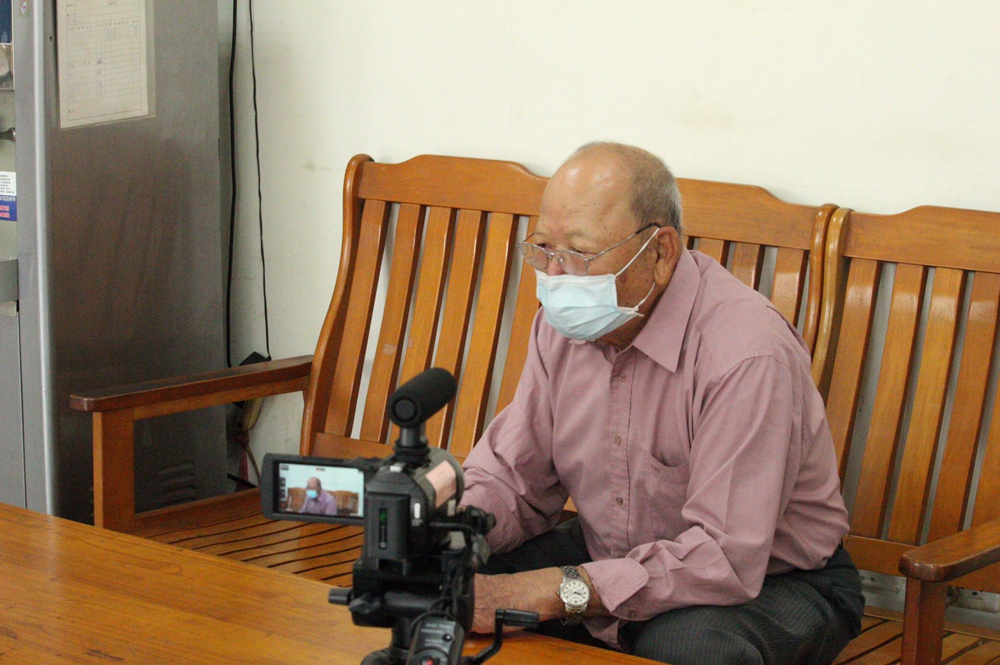

傳統建築工藝在時代的進步下，擁有此手藝的人逐漸稀少，在車籠埔扎根80多年的謝老先生，與從事開路工作的妻子相愛而生下了四個孩子，靠著這項手藝將孩子們拉拔長大。
這是從爺爺手中接過來的建築工藝，雖然未將這份手藝讓子女繼續傳承下去，但謝老先生深知在時代的推演之下，會有更先進的建築技術，在將來就算傳統的建築工藝最後可能因此沒落最終走向消失，在謝老先生眼中，這也並非是一件讓人惋惜，反而是要感到欣慰的一樁好事。
年輕力壯時，所從事的建築工藝涉略的範圍甚廣，從修補房屋到刷油漆，還有房屋水電都包含其中。也因此參與過廟宇興建，比如68年的46號廟又或者69年的50號廟，這是屬於謝老先生職業生涯中的輝煌歷史。
各行各業之都擁有各自的職業壓力，謝老先生承包了整個太平區的建築，他深知今日如若不接下案子，明日就有可能沒人願意找他蓋房子。在記憶深處，64年的宜欣社區是他做過最大工程，與40多位包頭工歷時一年多共同完成的社區興建，除了工作辛勞，共識職場的情誼也彌足珍貴。
建築工藝帶來的勞累與職傷也一度讓謝老先生產生了轉換跑道的想法，年近50歲的謝老先生在反覆思考後將這份工作做到退休，接著投入了古蹟維護的行業當中，直至今日的80歲，在反覆自我考量下，依舊從事著簡單的土水工作。